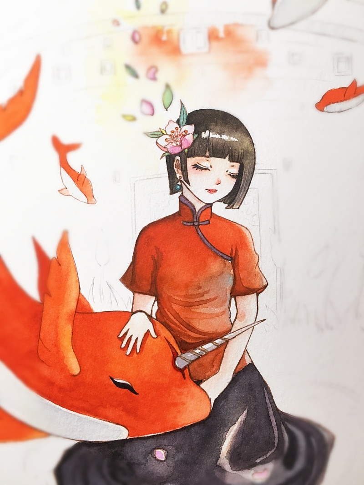
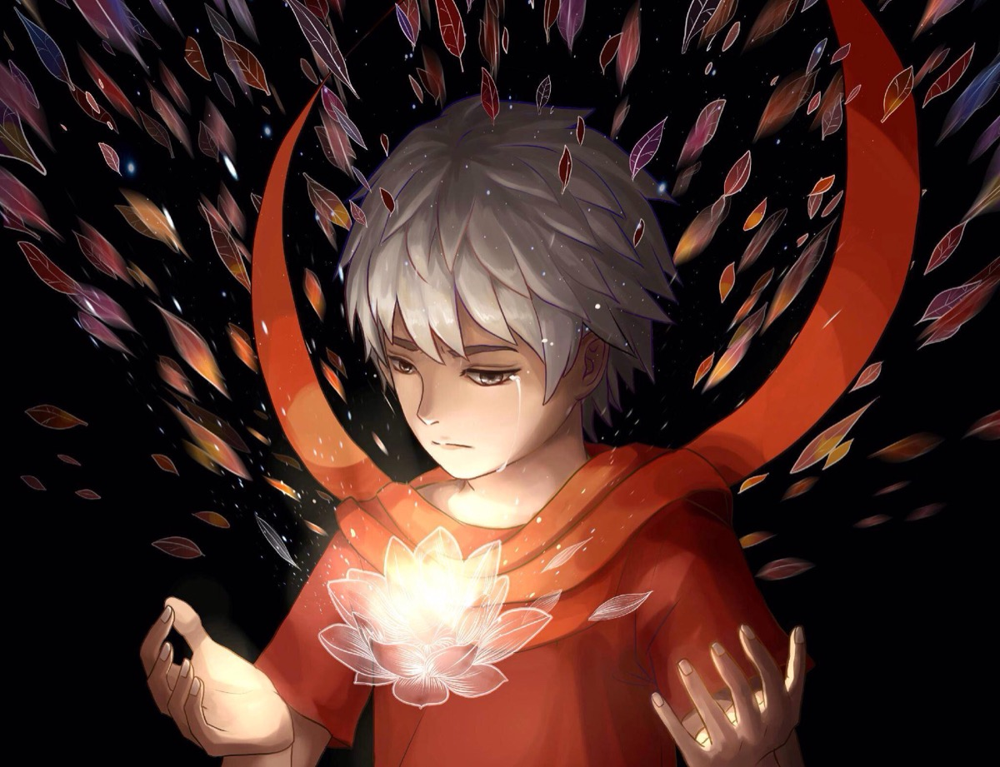
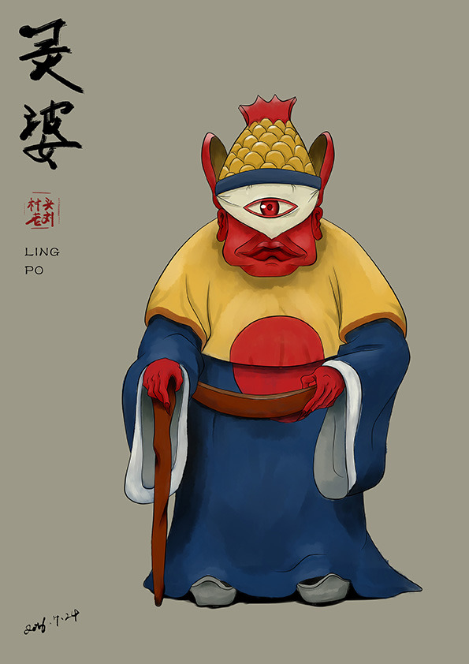

大鱼海棠故事简介

在天空与人类世界的大海相连的海洋深处，生活着掌管着人类世界万物运行规律的“其他人”。居住在“神之围楼”里的女孩“椿”，十六岁生日那天变作一条海豚到人间巡礼，被大海中的一张网困住，一个人类男孩因为救她而落入深海死去。为了报恩，她需要在自己的世界里帮助男孩的灵魂——一条拇指那么大的小鱼，成长为比鲸更巨大的鱼并回归大海。历经种种困难与阻碍，男孩死后终于获得重生，但这一过程却不断地违背“神”的世界规律而引发种种灾难。
主要人物介绍
|  | 生家族的继承人，能让植物生长。性格坚强执着，对人类世界充满好奇，有感恩的心和责任感，虽然外表看上去有些冷漠严肃，但是内心是非常细腻，富有同情心。 名字出处：庄子《逍遥游》：“楚之南有冥灵者，以五百岁为春，五百岁为秋；上古有大椿者，以八千岁为春，八千岁为秋。” |
|  | 湫：与椿从小一起长大，自幼没有父母，风家族的孤儿，掌管秋风。 “你知道吗，我从小没有爸妈，奶奶一个人把我带大，吃了很多苦，从小就没人管我，天不怕地不怕，想干什么干什么，可在世上我最怕的，就是让我爱的人受苦……” “你总是在跑，每次看到你跑，我就感觉很好。”湫对椿说。 “为什么感觉很好？”椿问。“不知道。就觉得……充满希望。”湫对着椿说。 “人要是死了，就看不见这么美的天空了。”湫望着漫天的星星自言自语。 |
| 鲲：人类男孩的灵魂，身世不明。 | |
|  | 灵婆：掌管所有死去人类灵魂的老太婆，头是一条鱼，与椿做了恶魔的交易 |